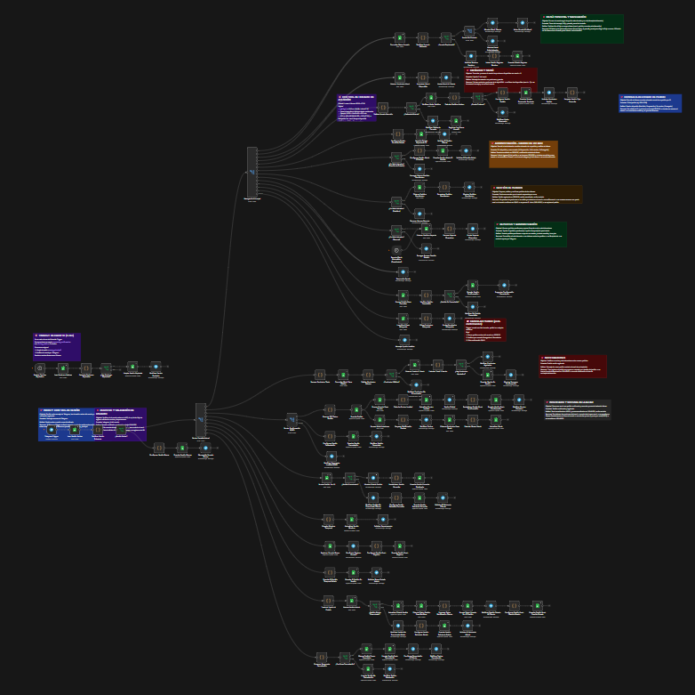
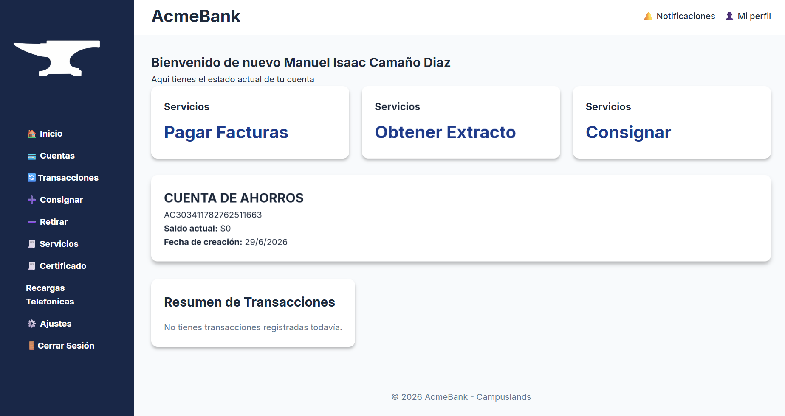
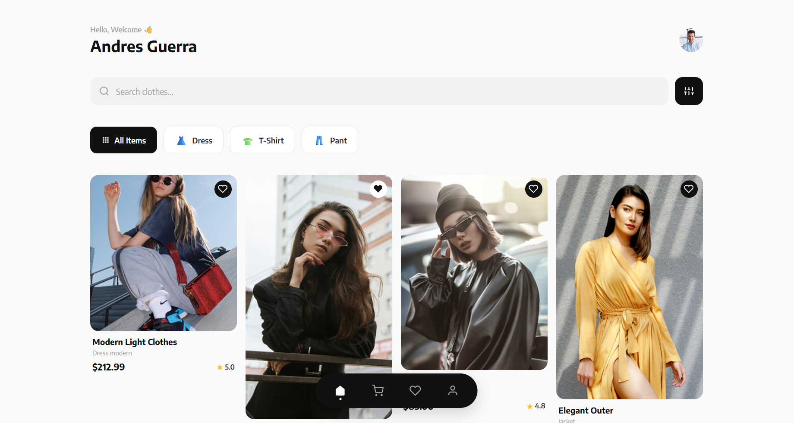

DestacadoDeliveryBot
Bot de Telegram para gestión de pedidos de cafetería, construido con n8n y Google Sheets como base de datos. Incluye flujo de pedidos, validación de horarios de atención, manejo de errores y reportes automáticos.
Hola, soy
Desarrollador Full Stack Junior
Construyo soluciones que conectan tecnología con problemas reales. Con enfoque en automatización, JavaScript y mucho café. ☕
Soy estudiante de desarrollo de software en Campuslands, Bucaramanga. Me mueve la curiosidad por entender cómo funcionan las cosas y, sobre todo, cómo mejorarlas usando tecnología.
Disfruto diseñar soluciones a problemas reales con grandes ideas — "si lo puedes imaginar,lo puedes programar" dicen, aplicando mi creatividad y conocimientos pienso facilitar muchas tareas monotonas para los humanos.
Fuera del código, me gusta planear bien antes de ejecutar. Me gustas siempre entender el todo para saber que hacer con sus partes.
Herramientas con las que he construido proyectos reales.
Proyectos reales, con código real. Sin exagerar.

DestacadoBot de Telegram para gestión de pedidos de cafetería, construido con n8n y Google Sheets como base de datos. Incluye flujo de pedidos, validación de horarios de atención, manejo de errores y reportes automáticos.

Plataforma bancaria web con gestión de cuentas, transacciones y validaciones. Construida con JavaScript vanilla como proyecto de formación en lógica de negocio y manipulación del DOM.

Diseño frontend completo de una tienda de ropa. Proyecto desarrollado de forma independiente, aplicando HTML y CSS para construir una interfaz responsive y funcional.
Estoy buscando oportunidades de prácticas profesionales o mi primer empleo. Si tienes un proyecto interesante o una vacante, escríbeme — respondo rápido.